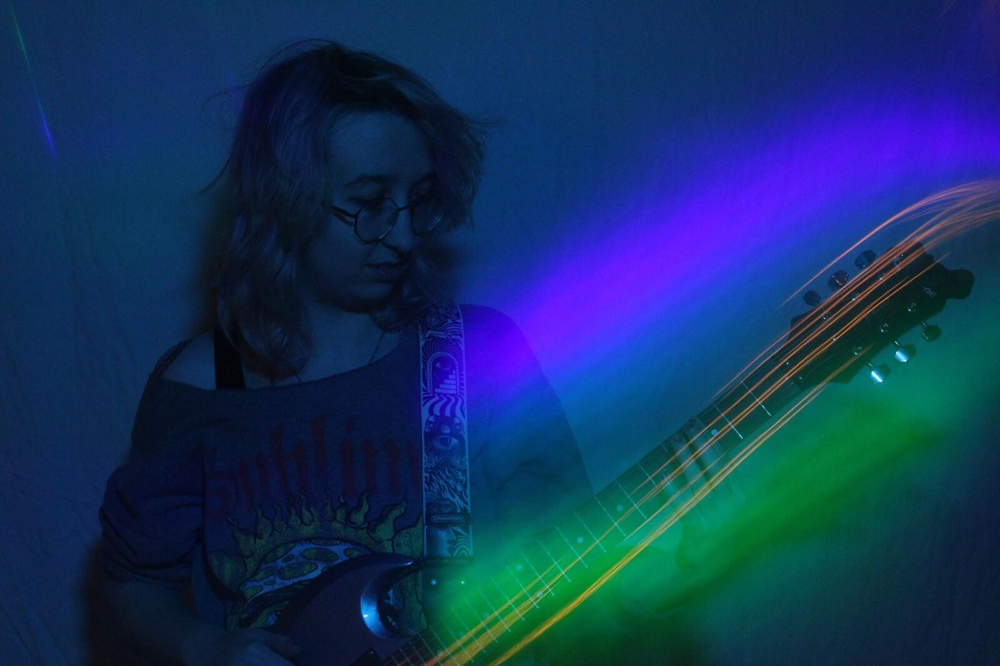
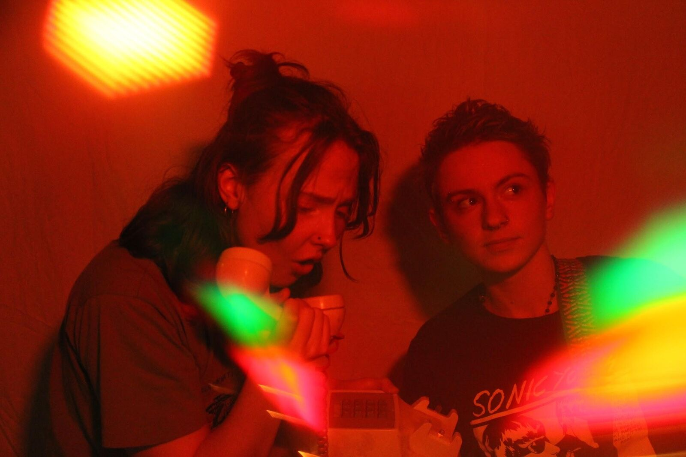
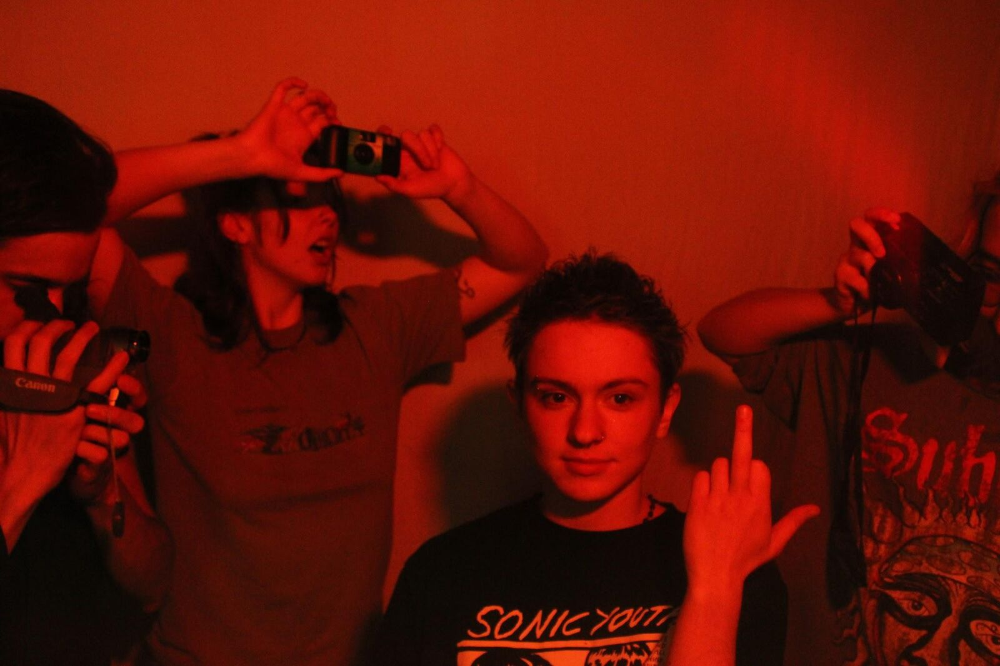
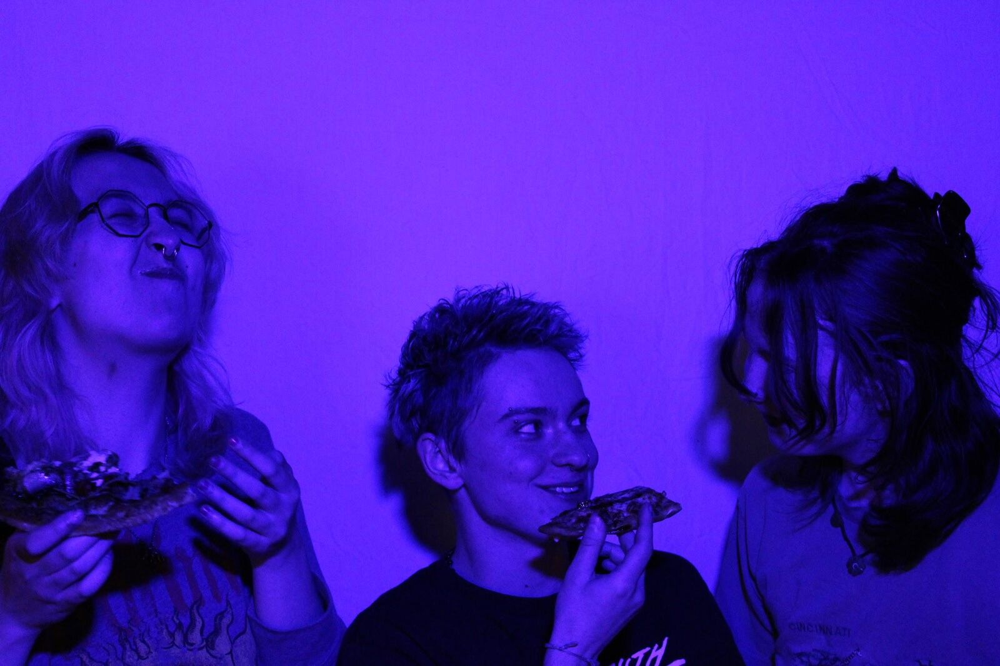

DRAFT. Highlighted items need confirming before this goes public.
// MUSIC · LIVE
SVFP, May 2025
One sentence: what happened, and why it is worth looking at.
SVFP (sex van floor plan) was founded by Eli, Rho and Chuck in 2024. Opening paragraph: the show, the bill, the room, what the night was like.

Middle paragraph: the set itself, a song, a moment, a quote from the band or the crowd.


Closing paragraph: after the set.
